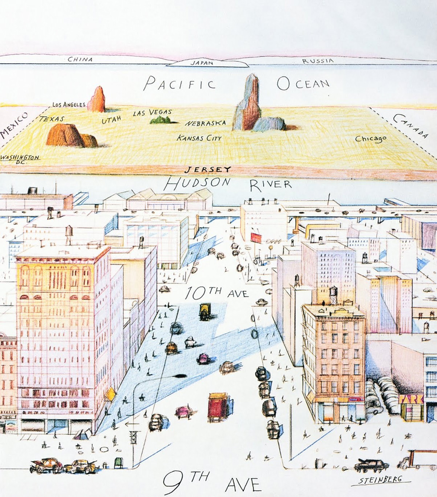
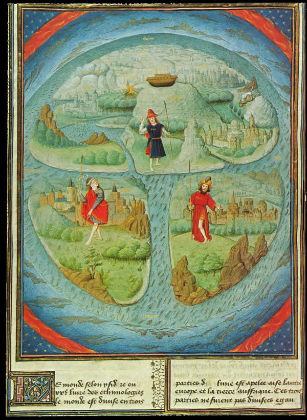
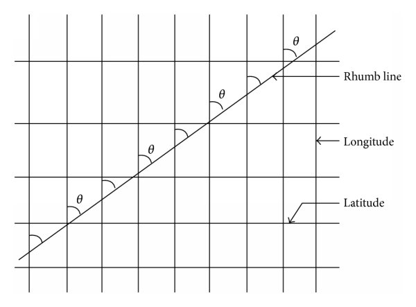
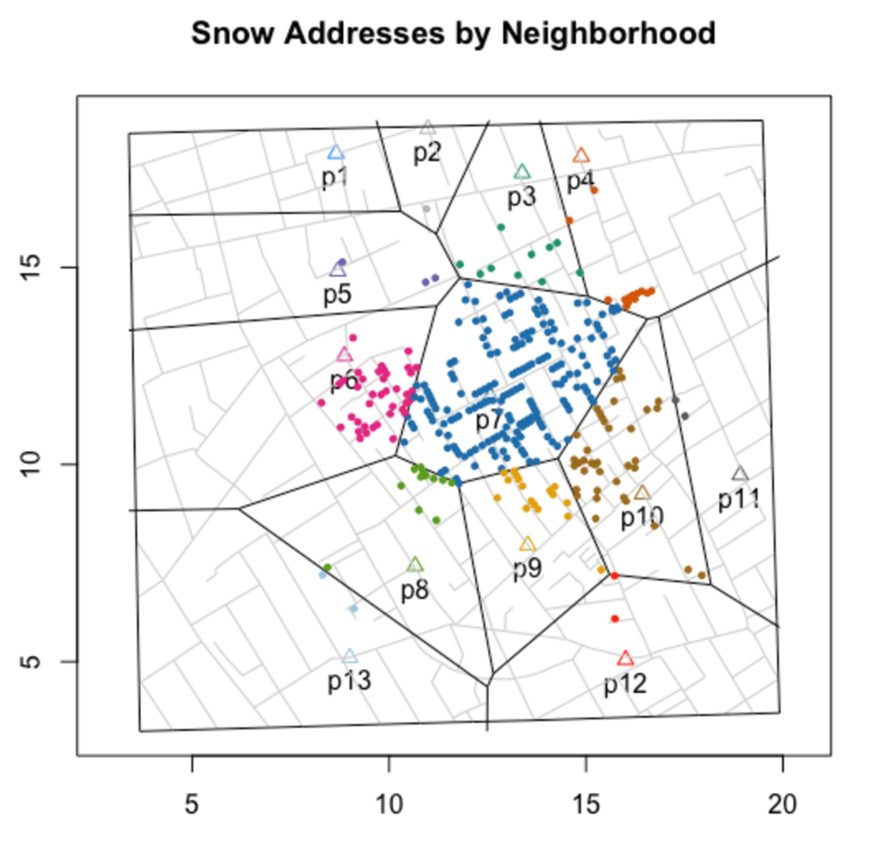
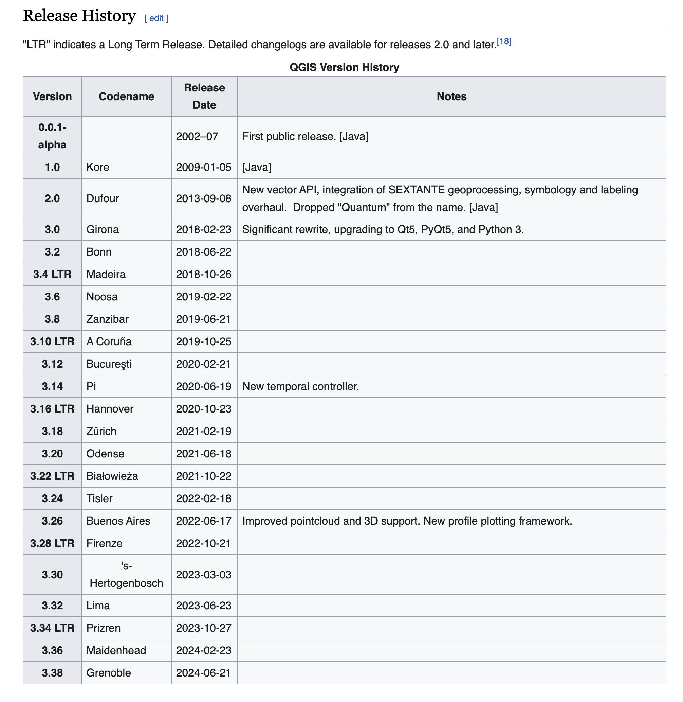
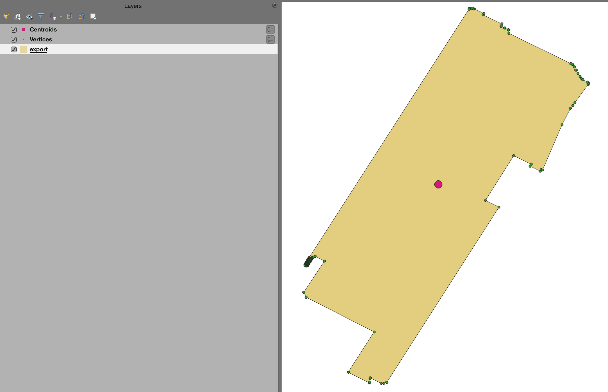
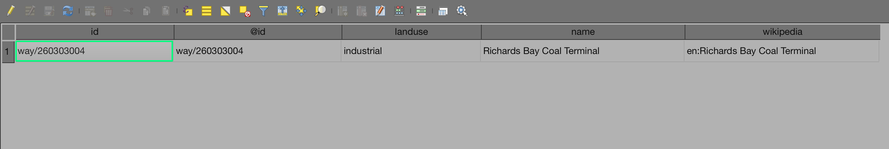
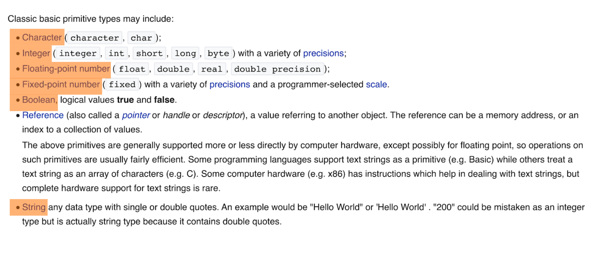
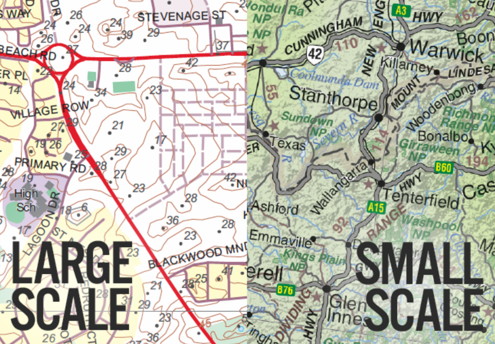

Spatial Thinking - definition and introduction
Spatial thinking is defined as the knowledge, skills, and habits of mind to use concepts of space, tools of representation like maps and graphs, and processes of reasoning to organize and solve problems.1
Spatial Thinking - Connections to Mental Maps
Mental maps are a way of combining our objective knowledge of places in addition to our subjective perceptions, or opinions, of locations around the world.

Spatial Thinking - Concepts of Space
- Space, space-time, object/field, place
- Primitives of identity:
- object, container, boundary, shape, texture
- Primitive spatial relations:
- static location - distance, direction, distribution
- connection
- dynamic motion - flow, force, intersection/collision
Spatial Thinking - Spatial Reasoning
- Extracting spatial structures
- boundary; pattern; cluster; center; path; surface; network; sequence; hierarchy; region
- Performing spatial transformations
- perspective; rotation; 3D > 2D; scale; interpolation; generalization
- Drawing functional inferences
- spatial correlation; spatial dependence; heterogeneity; extrapolation; prediction; causation
Maps - Historical Frameworks
- Mappa Mundi in La Fleur des Histoires, 1459-1463, showing Noah’s Ark on Mount Ararat.
- Medieval Period -European, Schematic + Illustrative.

Maps - Historical Frameworks
A Micronesian navigational chart (Marshall Islands), made of wood, sennit fiber and cowrie shells.
Navigational purpose; mapping of ocean swells and currents.

Maps - Historical Frameworks
Ptolemy’s World Map (Mathematical Treatment of Space, Coordinate system)
Reconstituted from Ptolemy’s Geography (circa 150) in the 15th century.

Maps - Historical Frameworks
- Mercator Map (Refined Mathematical Approach, Geometric Treatment of Space)

Maps - Historical Frameworks
- Any straight line on a Mercator projection map is a line of constant true bearing relative to true north that enables a navigator to plot a straight-line course. This is also termed a Rhumb Line or Loxodrome.

John Snow’s ‘Broad Street Pump Map’
John Snow’s ‘Broad Street Pump Map’
John Snow’s ‘Broad Street Pump Map’
Early example of (Modern) epidemilogical mapping
Fits within the larger study and analysis of the distribution (who, when, and where)
Excellent example of Waldo Tobler’s The First Law of Geography (1969) whereby everything is related to everything else, but near things are more related than distant things.
John Snow’s ‘Broad Street Pump Map’
Thiessen polygons (also known as a Voronoi Diagram) around the wells, defining straight-line least-distance service areas for each pump.

John Snow’s ‘Broad Street Pump Map’
Spatial autocorrelation helps understand how similar closer objects are to other nearby objects.

GIS - The Quantitative Approach
- SYMAP (Harvard Laboratory for Computer Graphics and Spatial Analysis ): early GIS system that was able to output vector features representing land use and contours in urban areas. (Harvard )
GIS - The Quantitative Approach
GIS - QGIS - Version History

GIS - Definitions
- Geographic
- i.e. the geometry or spatial component of data
GIS - Definitions
- Information
- i.e. common, colloquial formats, often tabular of attribute data
GIS - Definitions
- System
- processing input data to output meaningful results, often presented as cartographic output, i.e. maps
GIS - Definitions
- Valid GIS data inputs are generally defined by two main models - Vector & Raster
GIS - Definitions
- The vector model is defined by points, lines and polygons; this model is typically used to represent discrete phenomena, i.e. ‘bounded’ or defined by an edge.
GIS - Terminology
- Feature
- In a GIS, a physical object or location of an event. Features can be points (a tree or a traffic accident), lines (a road or river), or areas (a forest or a parking lot).

GIS - Terminology
- Geometry
- Geometry deals with the measures and properties of points, lines and surfaces. In a GIS, geometry is used to represent the spatial component of geographic features.

GIS - Terminology
- Attributes
- Organized by Record & Row; Record is a logical unit of data in a file, and the Row is positioned horizontally and contains a series of thematic descriptors of various data types.

GIS - Terminology
- Together, a Table consists of a set of data elements that has a horizontal dimension (rows) and a vertical dimension (columns) in a relational database system. A table has a specified number of columns but can have any number of rows. A table is often called a relation. Columns are also referred to Fields.
GIS - Terminology
- Attribute Data organized via hierarchy

GIS - Terminology
- Attribute Data at its root is structured as primitive data types

GIS - Terminology
- Map Scale
- John Snow’s Map was a decidedly Large Scale analysis in an urban environment.

GIS - Terminology
- In GIS, multiple vector & raster spatial datasets are organized by a ‘stacking principle’ referred to as Overlay.
{kind=link}


{kind=link}

{kind=link}